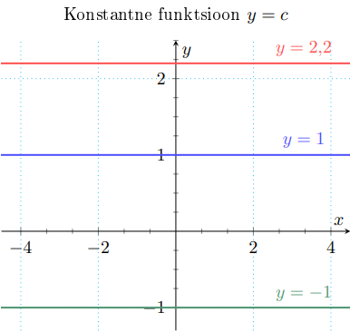

Esileht
Konstantsed funktsioonid
Konstantne funktsioon
Konstantne funktsioon ei sõltu x väärtusest.
f(x) = c
• X = R, Y = {c}
• paaris
• paaritu kui c = 0
• tõkestatud
• perioodiline, põhiperioodi pole

eelmine teema
järgmine teema